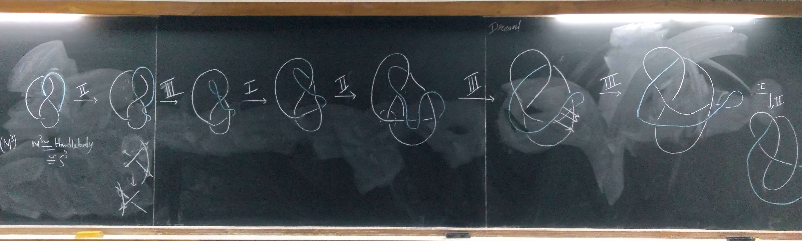

Publications
- From discrete to dense: explorations in the moduli space of triangles. With Aahana Aggarwal and Subhojoy Gupta (2026). Accepted for publication in Mathematics Magazine.
- On dynamics of the Mapping class group action on relative \( \text{PSL}(2, \mathbb{R}) \)-Character Varieties (2025). Groups, Geometry and Dynamics.
- The Goldman Bracket characterises homeomorphism between non-compact surfaces. With Sumanta Das and Siddhartha Gadgil (2024). Algebraic and Geometric Topology.
- Factoring periodic maps into Dehn twists. With Neeraj Kumar Dhanwani and Kashyap Rajeevsarathy (2023). Journal of Pure and Applied Algebra.